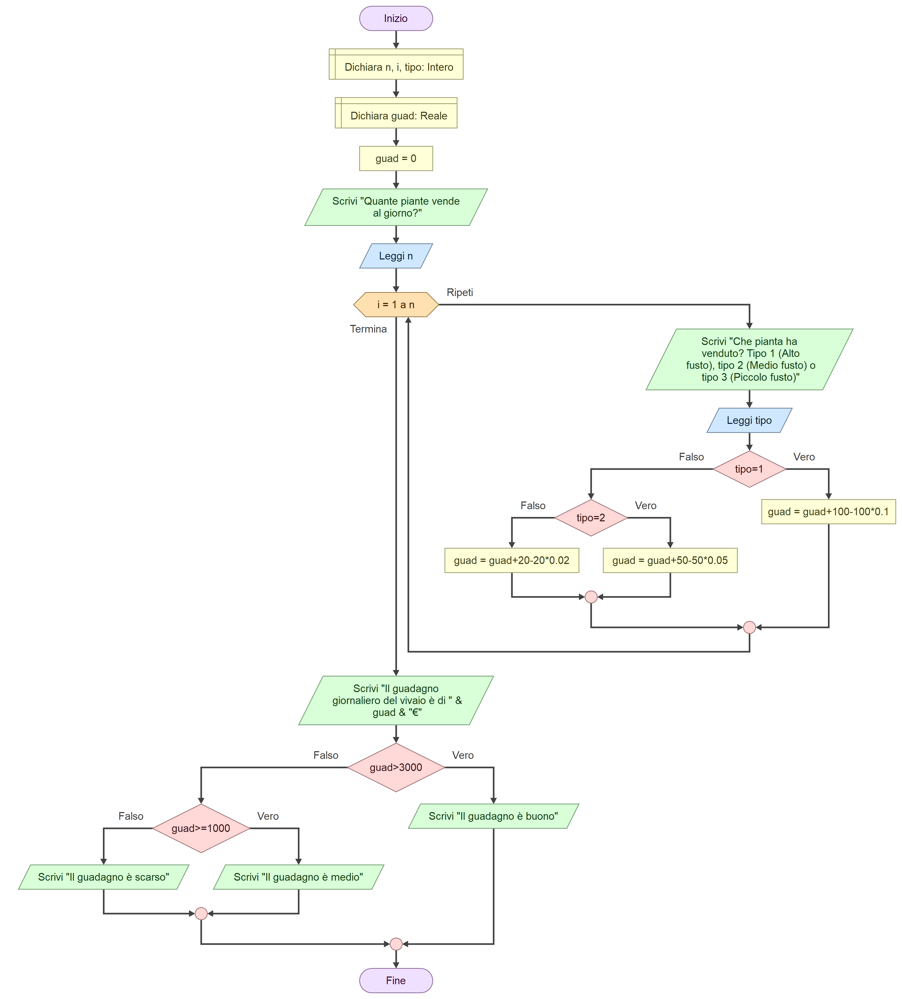
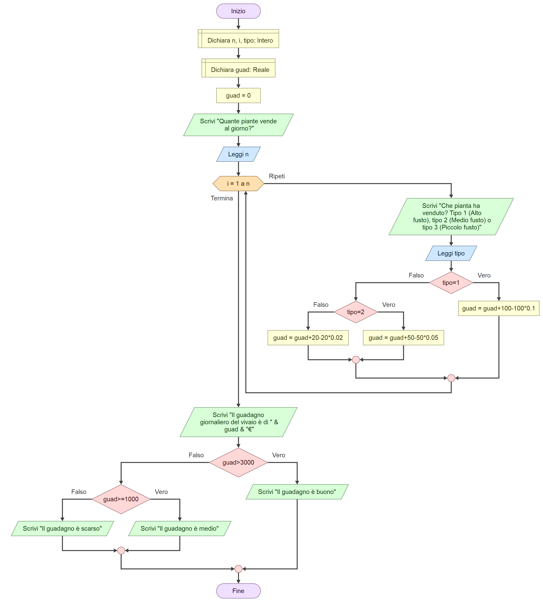

Capitolo 4
vai alla pagina indice
Cos'è un programma?
la Struttura
Cos'è un programma?
Un Programma o applicazione è una sequenza di istruzioni
scritte una dopo l'altra che prende dei dati e li esegue
ad altissima velocità al fine di fare un'azione (Fare un
calcolo, giocare ad un videogioco...).
Espresso inizialmente in linguaggio naturale, il problema
di partenza deve passare attraverso varie fasi di
trasfomazione che permettono di focalizzare meglio gli
obiettivi e il modo per raggiungerli, fino ad ottenere
l'nsieme di istruzioni che costituiscono il programma
risolutore.
Questo processo si chiama processo di
formalizzazione e necessita degli input e degli output.
La Struttura
Per rappresentare il concetto di algoritmo si usano degli
schemi di flusso detti anche Flow chart o Diagrammi a
blocchi, ognuno rappresenta un'azione e la loro combinazione
può risultare negli stessi risultati con metodi di calcolo
diversi.
Ecco degli esempi:

 
